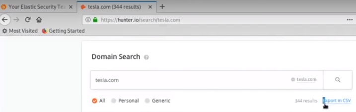

user websites like this to search for their domain, and get their email
this is a repo that have 1.4 billion clear text passwords:
https://github.com/philipperemy/tensorflow-1.4-billion-password-analysis